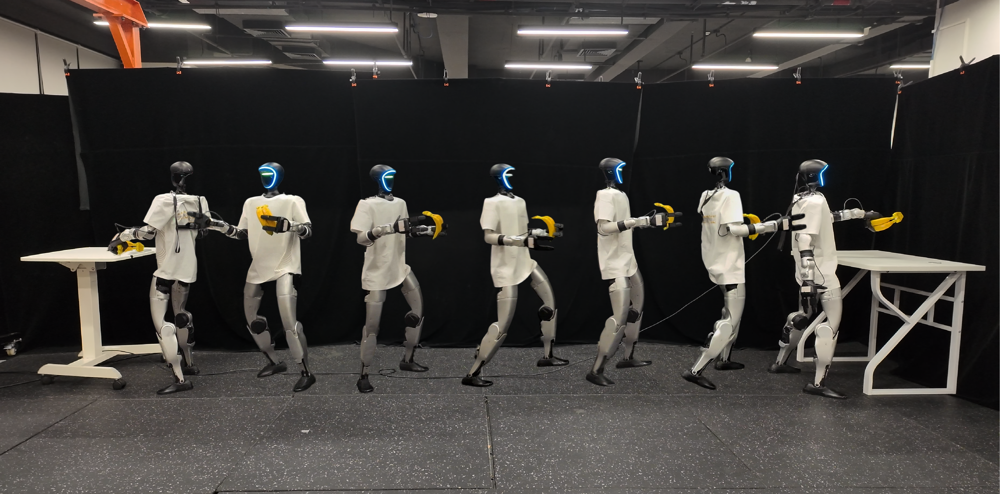
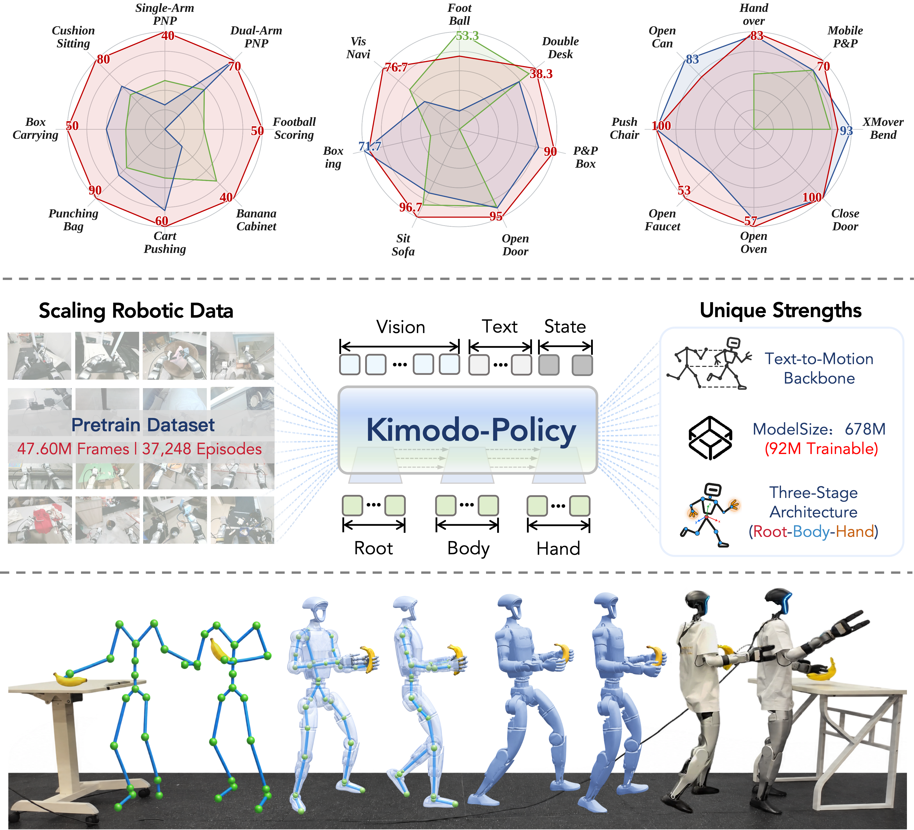
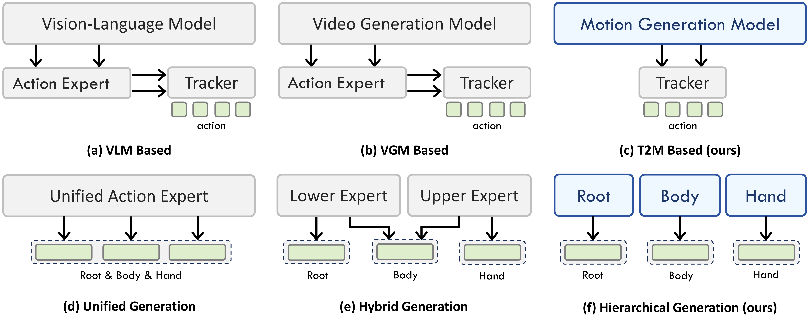
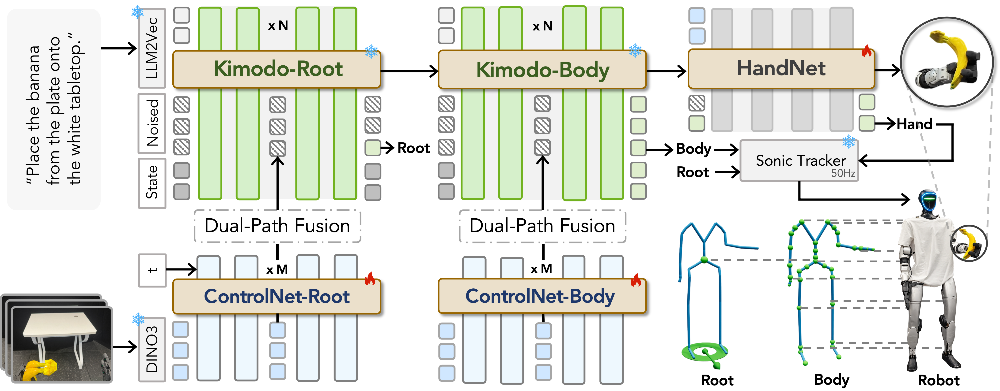
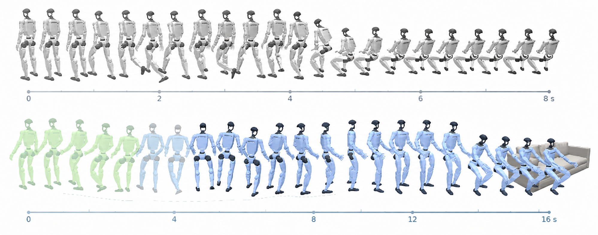
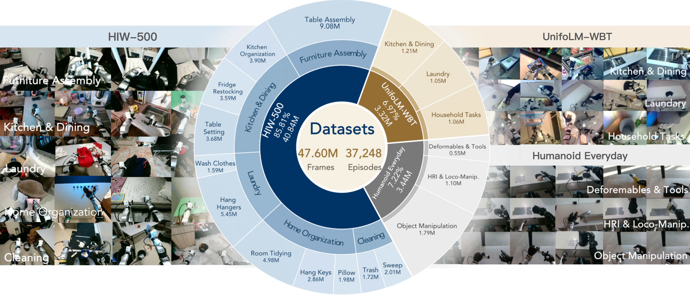
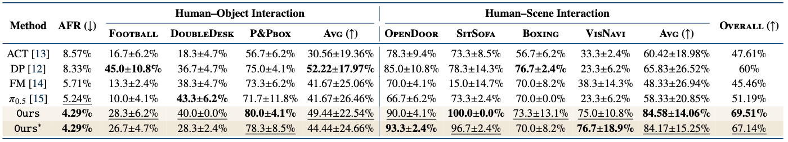
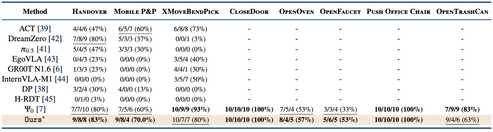
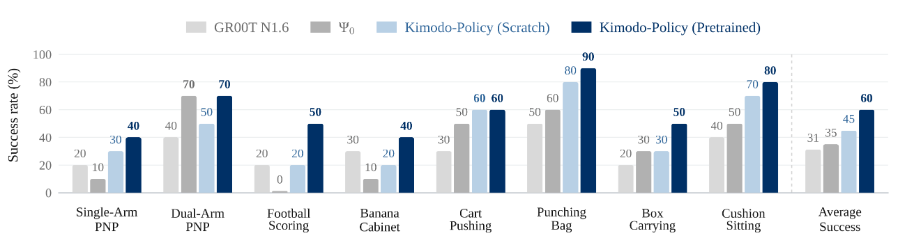

Kimodo-Policy
From Text-to-Motion Generators to
Humanoid Vision-Language-Action Policies
1 HKUST(GZ) 2 JD Explore Academy 3 BJUT 4 University of Cambridge
Whole-body intelligence for humanoid loco-manipulation.
Humanoid loco-manipulation requires a robot to interpret language and visual observations while coordinating navigation, balance, posture, and dexterous interaction over long horizons. These tightly coupled behaviors demand both coherent whole-body motion and continual correction from sensory feedback.
We introduce Kimodo-Policy, a visually grounded humanoid policy that adapts a pretrained Text-to-Motion diffusion model to closed-loop control. A structured motion prior supplies coordinated trajectories, visual conditioning grounds them in the current scene, and a root–body–hand hierarchy organizes actions according to their physical roles.
Across simulation and physical-robot evaluations, Kimodo-Policy achieves 72.14% overall success on multi-task HumanoidArena, reaches best or joint-best performance on six of eight SIMPLE tasks, and obtains a 60% mean success rate across eight real-world tasks. These results show that transferring motion priors into a visually grounded whole-body policy improves both benchmark performance and deployment reliability.

Loco-manipulation needs more than an action expert.
Humanoid policies must move the base while reaching, regulate posture to stay balanced, and coordinate contact-rich hand actions. Root motion, articulated body motion, and hand commands have different physical roles, yet errors in any one can propagate through the full action sequence.
Current VLM- and world-model-based approaches provide strong semantic and visual representations, but their action experts still need to learn embodiment-specific, temporally coherent whole-body behavior from robot data. Unified action spaces can entangle navigation, posture, and manipulation; partially decoupled designs often leave root and body generation coupled in one expert.
Kimodo-Policy addresses both challenges: it transfers a pretrained text-to-motion prior to visually grounded control and explicitly structures prediction as root, body, and hand stages. The decomposition preserves coordination while giving each motion component a dedicated output.

A structured motion prior, grounded in the scene.
Kimodo-Policy keeps the pretrained Kimodo root and body denoisers and DINOv3 image encoder frozen. Trainable visual ControlNet branches inject scene information into selected denoising layers through two complementary paths: motion-query cross-attention retrieves relevant image evidence, while a token-axis MLP maps spatial image features onto the future time horizon. Zero-initialized residual projections preserve the original motion prior at the start of adaptation.
The policy generates actions hierarchically. Root predicts global translation and heading; Body generates articulated whole-body motion conditioned on the predicted root; and a dedicated HandNet predicts bilateral open/close controls conditioned on visual features, current hand state, and future body features.
At each query, observed motion history constrains the prefix of the diffusion sequence. The policy denoises a future action chunk, sends tracker-compatible motion to the low-level controller, executes only a prefix, then replans from the updated image and state. This receding-horizon loop combines temporally coherent motion with continual visual and proprioceptive correction.

Transferring text-to-motion priors to control.
A text-to-motion generator can already produce coherent whole-body behavior from an instruction such as “Sit on the sofa,” but text alone cannot determine where the robot is or how the scene is changing. Kimodo-Policy retains this pretrained motion structure, then conditions future motion on egocentric visual features and observed motion history.
At each replanning step, the observed history anchors the generated sequence to the robot’s measured state, while visual ControlNet residuals adapt the future to the current scene. The policy therefore turns sequence generation into motion completion under feedback: execute a short prefix, observe the result, and generate the next chunk.

Simulation and real-world evaluation.
We evaluate Kimodo-Policy from pre-training through simulation and physical-robot deployment. HumanoidArena measures language-conditioned whole-body control across human–object and human–scene interaction; SIMPLE tests manipulation skills under progressively stronger visual and target-pose variation; and the real-world suite measures reliability on eight physical-robot tasks. The results below report the aggregate success rates and task-level comparisons from the paper.
VLA policy pre-training.
Before benchmark-specific post-training, Kimodo-Policy is trained on a diverse 419-hour humanoid corpus assembled from HIW-500, 14 available UniFoLM-WBT task subsets, and Humanoid Everyday. Each example pairs an egocentric image and language instruction with a 100-frame motion history and a 50-frame future action chunk at 30 Hz.
The pretrained Kimodo motion denoiser and DINOv3 visual encoder remain frozen. This stage trains the visual ControlNet and hand diffusion head to ground the motion prior in visual observations and language, providing a reusable initialization for downstream tasks.

Simulation: HumanoidArena and SIMPLE.
We study simulation performance on two complementary benchmarks. HumanoidArena stresses long-horizon loco-manipulation, balance, navigation, and human–object or human–scene interaction, while SIMPLE isolates eight manipulation skills under L0–L2 visual, lighting, and target-pose randomization.
HumanoidArena.
In the single-task setting, direct fine-tuning reaches 69.51% overall success, exceeding the strongest baseline (DP, 60.0%) by 9.51 percentage points, while achieving a 4.29% average fall rate. With one policy jointly trained on all seven tasks, VLA-pretrained Kimodo-Policy reaches 72.14% overall success and the lowest 4.29% AFR, outperforming the strongest baseline (π0.5, 53.8%) by 18.33 percentage points. It also leads the mean success rates for both HOI (56.11%) and HSI (84.17%), with 95.0% on OpenDoor, 96.7% on SitSofa, and 90.0% on P&Pbox.

SIMPLE.
On SIMPLE, the VLA-pretrained policy is best or joint-best on six of eight tasks. It leads Handover at 83%, Mobile P&P at 70%, OpenOven at 57%, and OpenFaucet at 53%, and matches Ψ0 at 100% on both CloseDoor and Push Office Chair. It remains competitive on XMoveBendPick (80%, second) and OpenTrashCan (63%, second), showing robustness across mobile manipulation, articulated-object interaction, and object pushing under distribution shifts.

Real-world evaluation.
We deploy Kimodo-Policy on a physical humanoid robot across eight tasks, with ten trials per task. The scratch-trained policy averages 45% success, compared with 31% for GR00T N1.6 and 35% for Ψ0. VLA policy pre-training raises the mean to 60%, a 15-point improvement over scratch, and improves seven of the eight tasks while matching scratch on Cart Pushing. The strongest task-level results are 90% on Punching Bag, 80% on Cushion Sitting, and 70% on Dual-Arm PNP.

Conclusion
Kimodo-Policy adapts a pretrained text-to-motion diffusion model into a visually grounded VLA policy for humanoid loco-manipulation. A root–body–hand hierarchy, dual-path visual conditioning, and motion-history constraints combine structured motion generation with receding-horizon feedback.
Results across simulation benchmarks and physical-robot tasks show that motion-generation priors can support coordinated whole-body behavior, while VLA policy pretraining improves deployment performance. These findings motivate further work on broader task coverage, more robust visual grounding, and efficient closed-loop control.